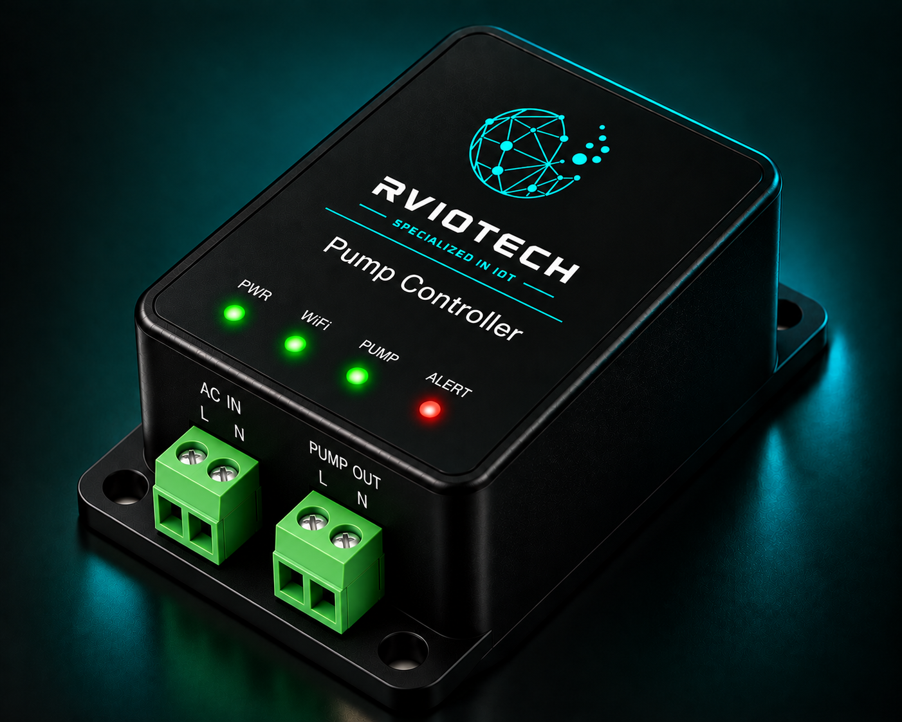

Concept image. Final product design may vary.
Pump
Controller
A connected pump control solution designed to provide remote ON/OFF control and automation of pumps for water management, building utilities and industrial applications.
ENQUIRE ABOUT THIS PRODUCT →From Remote Command to Pump Control
The controller receives a control command through the connected communication system and operates the pump through an appropriate switching interface. Sensors and status inputs can also be integrated for automated operation.
Control Pumps Without Being On Site
Pumps are often operated manually or through independent control systems. A connected pump controller enables remote operation, scheduled control and integration with sensors or monitoring platforms.
- Remote pump ON / OFF control
- Wireless IoT connectivity
- Relay-based switching interface
- Scheduled pump operation
- Sensor input integration
- Pump status monitoring
- Cloud and dashboard integration
- Suitable for building and industrial applications
Where It Can Be Used
Built for Connected Pump Control
- 01 Remote pump operation
- 02 Reduced manual intervention
- 03 Scheduled automation
- 04 Sensor-based control
- 05 Centralized monitoring
- 06 Integration with IoT platforms
Automate Your Pump Control
Connect pumps to remote control, monitoring and automation systems for smarter operation.